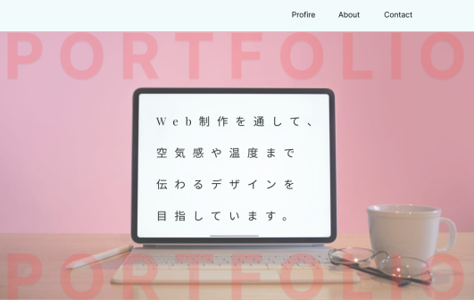
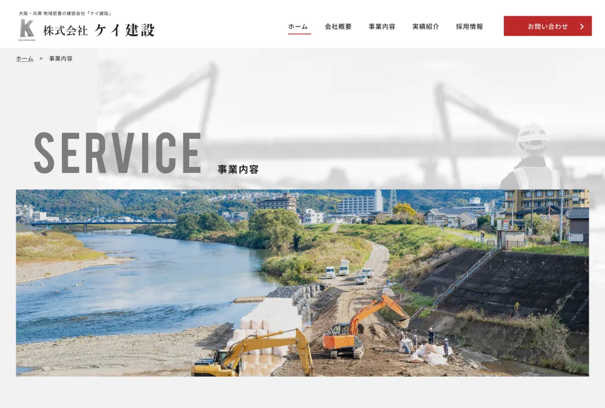
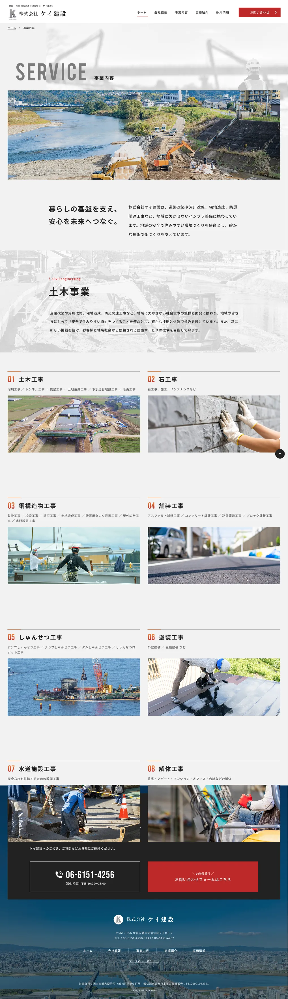
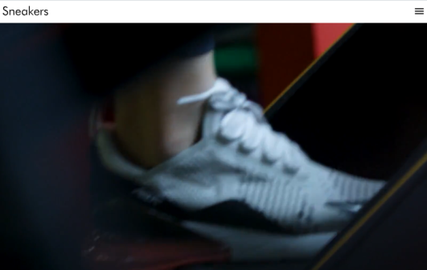

ポートフォリオサイト

PORTFOLIO
PORTFOLIO

「伝わるデザイン」と「心地いい余白」を大切に。
現在はLP制作やWebサイト制作を中心に、デザインをもとにした
コーディングやレスポンシブ実装を行っています。
細かな余白や文字サイズ、動きなど、細部まで丁寧に作り込むことを意識しています。
Web制作以外では、スポーツや音楽も好きで、音楽は自分の歌も出しています。
日々さまざまなものから刺激を受けています。
まだまだ成長途中ですが、“また見たくなるサイト”を作れるクリエイターを目指しています。
「伝わるデザイン」と「心地いい余白」を大切にしています。
現在はLP制作やWebサイト制作を中心に、デザインをもとにした
コーディングやレスポンシブ実装を行っています。
細かな余白や文字サイズ、動きなど、
細部まで丁寧に作り込むことを意識しています。
Web制作以外ではスポーツや音楽も好きで、
音楽は自分の歌も出しています。
日々さまざまなものから刺激を受けています。
まだまだ成長途中ですが、“また見たくなるサイト”を作れるクリ
エイターを目指しています。
↓ デビュー曲はこちらから！ ↓

デザインカンプをもとに、下層ページのコーディングを担当しました。
デザインの再現性を意識しながら、レスポンシブ対応や
アニメーション実装を行っています。
デザインカンプをもとに、
下層ページの
コーディングを担当しました。
デザインの再現性を意識しながら、レ
スポンシブ対応やアニメーション実装を
行っています。

デザインカンプをもとに、コーディングを担当しました。
・デザインとの差異が出ないよう、余白やフォントサイズを細かく調整
・スマホ、タブレット、PCでレイアウト崩れが起きないよう
レスポンシブ対応を実施
・再利用しやすいようにクラス設計を整理
・hoverアニメーションやtransitionを使用し、操作感を向上
・保守しやすいようにCSSを整理して記述
約2週間
HTML / SCSS / JavaScript
デザイン通りの余白再現に苦戦しましたが、
flex や clamp() を活用しながら細かく調整を行いました。
ほかに作った作品

